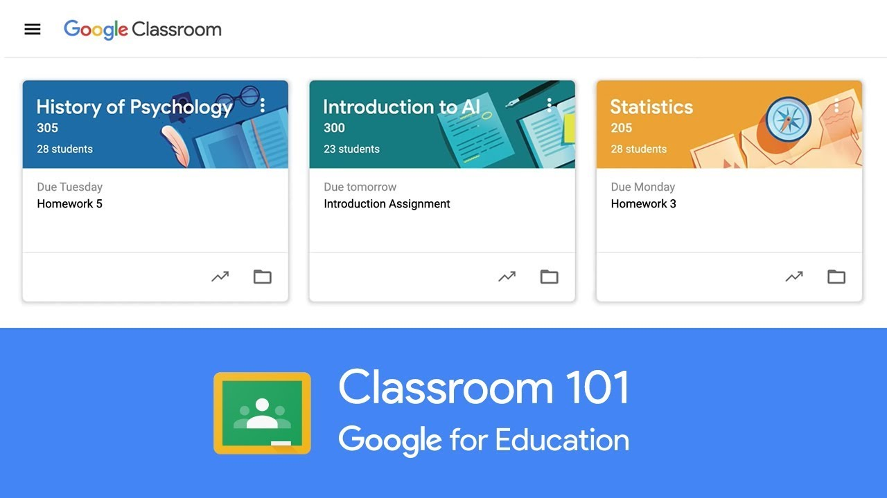

U online nastavi se koriste mnoge platforme. Većina njih je prilagođeno za obrazovanje, no neke od njih mnogo bolje funkcionišu za poslovanje. Najviše se koriste Google Classroom, Microsoftov Office 365 i neprofitni Moodle.
Google Classroom, integriše se sa ostalim Googleovim alatima, ponajviše sa Google Docs. Većina ljudi je već naviknuto na Gmail i Google Drive, tako da je učenicima i nastavnicima lako početi sa radom sa ovom platformom. Google Classroom može koristiti bilo ko, ne samo obrazovne ustanove, a škole i univerziteti besplatno dobijaju i G Suite, Googleovu alternativu za Office 365. Google Classroom je potpuno besplatan te također jedan od jedinih Googleovih proizvoda koji ne sakupljaju korisničke podatke.
Microsoft Office 365, osim što sadrži tradicionalne aplikacije kao Excel, Word i Powerpoint, daje mogućnost komunikacije unutar organizacije pomoću mnogih alata. Nije besplatan i ima veću količinu mogućnosti nego Google Classroom, ali je također teži za upotrebu. Problem je što se vrlo sporo učitava i ima ogromnu količinu neiskorištenih funkcija, to jeste funkcija koji prosječan učenik ili nastavnik ne treba.
Microsoft Teams je najčešći odabir aplikacije za komunikaciju unutar Office-a 365. Dobro je prilagođen školama i preko njega je moguće normalno odvijati nastavu. Međutim neke hrvatske škole koriste Yammer, aplikaciju koja nije namjenjena obrazovanju i služi kao interna društvena mreža za firme. Leon iz Srednje škole Pakrac je rekao za portal srednja.hr:
Mi imamo ‘nastavu’ preko Yammera. Jako je loše organizirano i pola profesora se ne zna koristiti svime time. Koliko vidim po korištenju, serveri su im preopterećeni i teško je raditi najosnovnije stvari bez čekanja pet minuta da se nešto učita. Ovo nam nije trebalo, pogotovo nama maturantima.
Moodle se po mnogo ćemu razlikuje od dvije prethodno navedene platforme. Moodle je neprofitni slobodni softver što ga ćini mnogo prikladnijim za obrazovanje. Ali, obavezno ga je instalirati i na zaseban server, tako da mnoge ustanove nisu u mogućnosti da ga koriste. Daje mnogo veću kontrolu i služi isključivo za zadaće i komunikaciju, to jeste nema mogućnosti izrade prezentacija i dokumenata. Ali to se može pokriti drugim softverom.